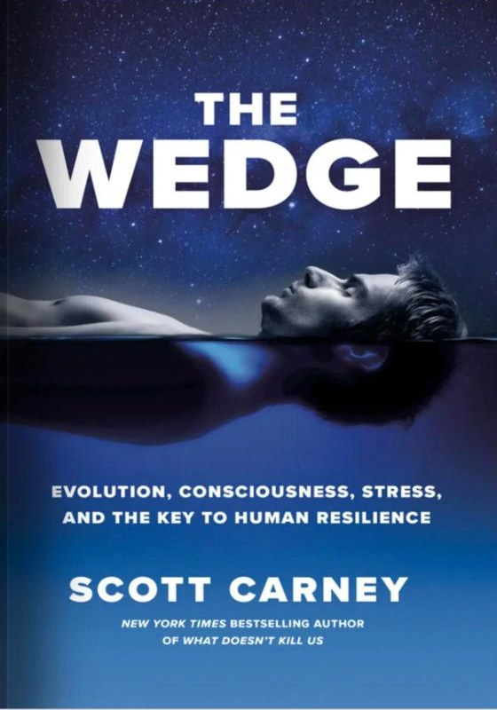

scottcarney.com/the-wedge · same address as today
Book · 2020
The Wedge
Evolution, Consciousness, Stress, and the Key to Human Resilience
The follow-up to the New York Times bestseller What Doesn't Kill Us: an investigation into how we can wedge control over the body's automatic stress responses.
About the book
Thrive or die: That’s the rule of evolution. Despite this brutal logic, some species have learned to survive in even the most hostile conditions. Others couldn’t—and perished. While incremental genetic adaptations hone the physiology of nearly every creature on this planet, there’s another evolutionary force that is just as important: the power of choice. In this explosive investigation into the limits of endurance, journalist Scott Carney discovers how humans can wedge control over automatic physiological responses into the breaking point between stress and biology. We can reclaim our evolutionary destiny.
In his New York Times bestseller, What Doesn’t Kill Us, Carney submerged himself in ice water and learned breathing techniques from daredevil fitness guru Wim Hof. It gave him superhuman levels of endurance and quieted a persistent autoimmune illness. At the core of those methods is a technique called The Wedge that can give a person an edge in just about any situation. This thrilling exploration of the human body's potential follows Carney as he searches the globe for people who understand the subtle language of how the body responds to its environment. He confronts fear at a cutting-edge neuroscience laboratory at Stanford, and learns about flow states by tossing heavy weights with partners. He meets masters of mental misdirection in the heat of a Latvian sauna, experiments with breathing routines that bring him to the cusp of transcendence, searches his mind in sensory deprivation tanks, and ultimately ends up in the Amazon jungle with a shaman who promises either madness or universal truth. All of this in service of trying to understand what we’re really capable of.
 What Doesn't Kill Us
What Doesn't Kill Us The Enlightenment Trap
The Enlightenment Trap The Vortex
The Vortex Dream
Dream The Red Market
The Red Market